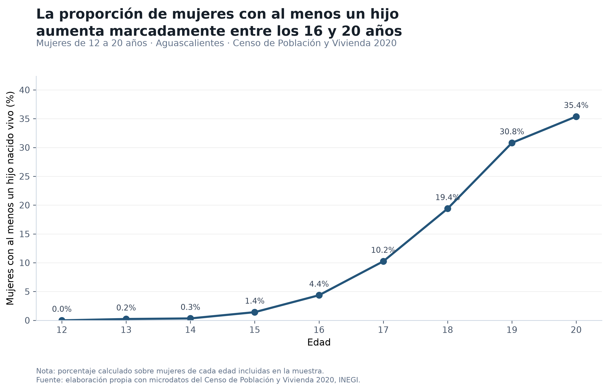

01 · EL PROYECTO
¿Qué estamos explorando?
Este proyecto explora patrones y combinaciones entre variables demográficas y de captación como edad, discapacidad, escolaridad, fecundidad y ubicación geográfica, con el propósito de identificar comportamientos que puedan resultar relevantes para el diseño de validaciones de universo, consistencia o contexto en aplicaciones de captación censal.
Una combinación poco frecuente no necesariamente constituye un error. Puede representar una inconsistencia, un caso que requiere confirmación o un valor atípico válido.
Un primer patrón: fecundidad por edad
Como punto de partida, se analiza la proporción de mujeres de 12 a 20 años con al menos un hijo nacido vivo. La visualización permite identificar cómo cambia este patrón conforme aumenta la edad.

La proporción observada aumenta con la edad y presenta un crecimiento más marcado a partir de los 16 años. Esta representación estática prioriza una lectura directa del patrón mediante etiquetas, jerarquía visual y reducción de elementos gráficos innecesarios.
03 · EXPLORA LOS RESULTADOS
Selecciona una perspectiva
Las visualizaciones presentan diferentes perspectivas del análisis. Selecciona una opción para explorar los resultados.
Fecundidad y edad
Pasa el cursor sobre los puntos de la visualización para consultar información adicional.
04 · ACERCA DE LOS DATOS
Fuente y alcance
INEGI. Censo de Población y Vivienda 2020.
Cuestionario Ampliado · Personas.
Aguascalientes.
Python · pandas · Plotly.